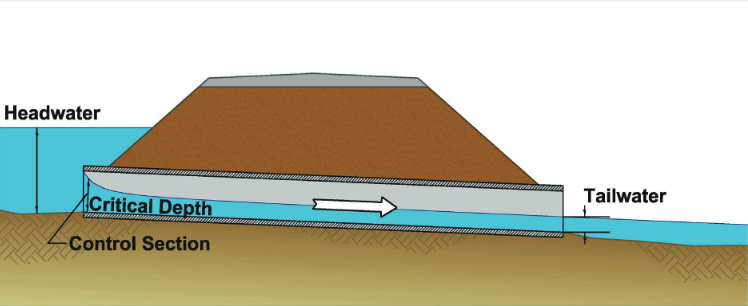
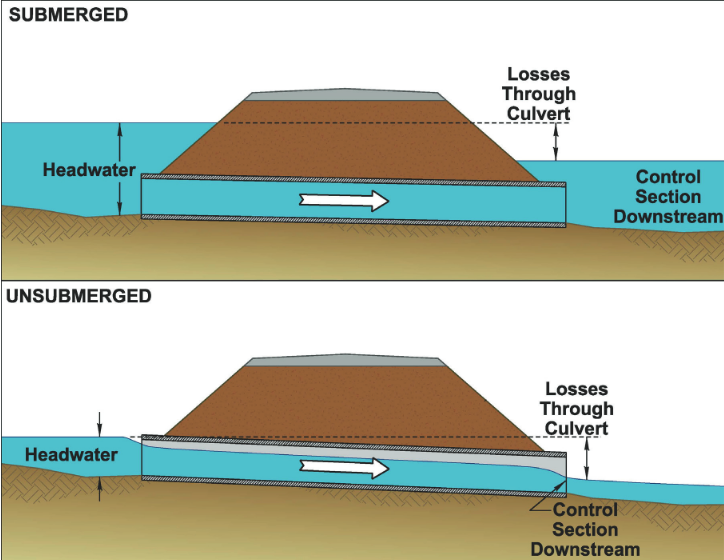
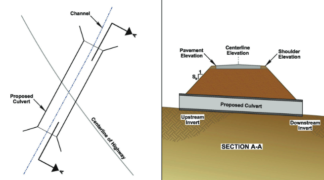

21. Culvert Hydrology#
Course Website
Readings#
Videos#
Culvert Hydraulic Design (YouTube) (FHWA Training) Go to time stamp 29:50 for design process demonstration.
Outline#
Culverts
Nomenclature
Hydrologic Considerations
Design Process
Introduction to Culverts#
Culverts are structures that allow water to pass beneath roads, railways, embankments, or other obstacles. They are typically made from concrete, steel, or plastic and can take various shapes, including circular, rectangular, or elliptical. Culverts are crucial for maintaining natural drainage patterns and preventing the accumulation of water on roads and other infrastructure, which can lead to flooding, erosion, or structural damage. By channeling water safely through or around man-made structures, culverts play a key role in managing both small streams and significant runoff during storms.
Note
Culverts are comparatively short as compared to storm sewers. Storm sewers can run miles (kilometers), culverts are usually only a few hundred feet (meters) long.
Terminology#
Certain terms are common to all culvert systems.

Headwater
Tailwater
Control-Type
Control-Section

Surcharged (submerged)
Unsubmerged
Hydraulic jump in culvert (not pictured)

Invert elevation
Soffit elevation
Crest elevation
Hydrologic Considerations in Culvert Design#
Designing culverts requires a detailed understanding of hydrological factors to ensure they provide adequate capacity for expected flows while preventing negative impacts on the environment and infrastructure. Some important hydrological aspects include:
Design Flow and Return Period: The primary hydrological consideration for culverts is the design flow, or the maximum flow rate the culvert must handle. Engineers determine this flow based on historical rainfall data and the return period (e.g., a 25-year or 50-year storm event) that the culvert should be designed to withstand. The return period is chosen based on the risk tolerance and the importance of the infrastructure being protected.
Watershed Characteristics: The size, shape, and slope of the watershed upstream of the culvert affect the volume and speed of water reaching it. Larger watersheds or those with steep slopes can generate more runoff, requiring a larger or more robust culvert to handle the peak flow without causing backups or flooding.
Runoff Coefficients: Similar to storm sewer design, runoff coefficients are used to estimate the amount of rainfall that becomes surface runoff in the watershed. Urban areas with many impervious surfaces (such as roads, parking lots, and rooftops) will have higher runoff coefficients than rural or vegetated areas, influencing the sizing of the culvert.
Peak Flow Estimation: Hydrologists use methods such as the Rational Method or unit hydrograph analysis to estimate the peak flow that the culvert must accommodate. Accurately predicting peak flow is critical to ensure that the culvert does not become a bottleneck during heavy rainfall or snowmelt events.
Hydraulic Considerations: Engineers must consider both inlet and outlet control conditions when designing culverts. The capacity of the culvert is influenced by factors such as the shape, slope, roughness, and the headwater depth (the depth of water upstream). Inlet-controlled culverts are limited by the size of the opening, while outlet-controlled culverts are constrained by the downstream flow conditions.
Time of Concentration: This is the time it takes for water to travel from the furthest point in the watershed to the culvert inlet. A short time of concentration can lead to rapid increases in flow, which can affect the peak discharge that the culvert needs to handle. Understanding the time of concentration helps in sizing the culvert appropriately to prevent flooding.
Debris and Sediment Transport: Culverts must also be designed with consideration for potential blockages from debris (such as leaves, branches, or sediment). A blocked culvert can significantly reduce its capacity and lead to overtopping of the road or embankment. Some culverts are designed with features like debris racks or larger openings to minimize the risk of clogging.
Environmental Impact: Culverts can impact the natural flow of water and aquatic ecosystems. Proper design should minimize disruption to fish migration and stream habitats by ensuring the culvert allows for natural water flow conditions. Techniques like stream simulation culverts, which mimic natural streambeds, are sometimes used to address these concerns.
Design Process#
Explained in Mays, L. W. 2001. Water-Resources Engineering. 1st Edition Wiley, pp. 651-669